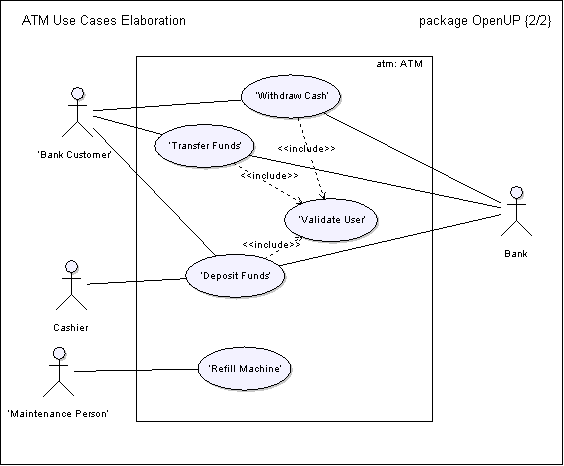

| Concept: Use-Case Model |
 |
|
| Related Elements |
|---|
ExplanationA use-case model is a model of how different types of users interact with the system to solve a problem. As such, it describes the goals of the users, the interactions between the users and the system, and the required behavior of the system in satisfying these goals. A use-case model consists of a number of model elements. The most important model elements are: use cases, actors and the relationships between them. A use-case diagram is used to graphically depict a subset of the model to simplify communications. There will typically be several use-case diagrams associated with a given model, each showing a subset of the model elements relevant for a particular purpose. The same model element may be shown on several use-case diagrams, but each instance must be consistent. If tools are used to maintain the use-case model, this consistency constraint is automated so that any changes to the model element (changing the name for example) will be automatically reflected on every use-case diagram that shows that element. The use-case model may contain packages that are used to structure the model to simplify analysis, communications, navigation, development, maintenance and planning. Much of the use-case model is in fact textual, with the text captured in the use-case specifications that are associated with each use-case model element. These specifications describe the flow of events of the use case. The use-case model serves as a unifying thread throughout system development. It is used as the primary specification of the functional requirements for the system, as the basis for analysis and design, as an input to iteration planning, as the basis of defining test cases and as the basis for user documentation Basic model elementsThe use-case model contains, as a minimum, the following basic model elements. ActorA model element representing each actor. Properties include the actors name and brief description. See Concept: Actor for more information. Use CaseA model element representing each use case. Properties include the use case name and use case specification. See Use Case artifact and Concept: Use Case for more information. AssociationsAssociations are used to describe the relationships between actors and the use cases they participate in. This relationship is commonly known as a "communicates-association". Advanced model elementsThe use-case model may also contain the following advanced model elements. SubjectA model element that represents the boundary of the system of interest. Use-Case PackageA model element used to structure the use case model to simplify analysis, communications, navigation, and planning. If there are many use cases or actors, you can use use-case packages to further structure the use-case model in much the same manner you use folders or directories to structure the information on your hard-disk. You can partition a use-case model into use-case packages for several reasons, including:
GeneralizationsA relationship between actors to support re-use of common properties. DependenciesA number of dependency types between use cases are defined in UML. In particular, <<extend>> and <<include>>. <<extend>> is used to include optional behavior from an extending use case in an extended use case. <<include>> is used to include common behavior from an included use case into a base use case in order to support re-use of common behavior. The latter is the most widely used dependency and is useful for:
Example Use-Case DiagramFigure 1 shows a use-case diagram from an Automated Teller Machine (ATM) use-case model.  Figure 1: ATM Use-Case Diagram This diagram shows the subject (atm:ATM), four actors (Bank Customer, Bank, Cashier and Maintenance Person), five use cases (Withdraw Cash, Transfer Funds, Deposit Funds, Refill Machine and Validate User), three <<includes>> dependencies, and the associations between the performing actors and the use cases. The use cases Withdraw Cash, Deposit Funds, and Transfer Funds all need to include how the customer is identified to the system. This behavior can be extracted to a new inclusion use case called Validate User, which the three base use cases <<include>>. The base use cases are independent of the method used for identification, and it is therefore encapsulated in the inclusion use case. From the perspective of the base use cases, it does not matter whether the method for identification is to read a magnetic bank card, or perform a retinal scan. They only depend on the result of Validate Customer.
Note that Figure 1 is only a partial view of the use-case model. The complete use-case model also includes descriptions
of each actor, descriptions of each use case, and use-case specifications for each use case. For a more complete
example of this use case model see Evolution of the Use-Case Model. |
This program and the accompanying materials are made available under the |